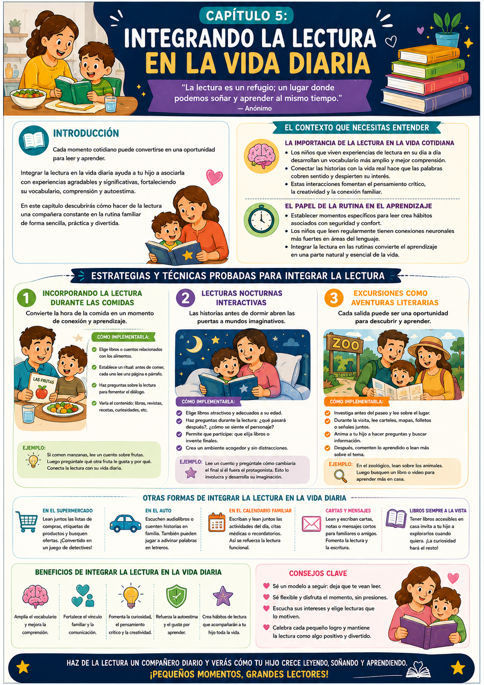

Estás en la cocina preparando la cena y tu hijo empieza a preguntarte sobre los ingredientes. En lugar de solo contestar, le contás la historia detrás de cada uno. Ahí, entre la cebolla y el tomate, surge un momento mágico de lectura.
Integrar la lectura en la vida diaria no es difícil — es cuestión de ver las oportunidades que ya existen en tu rutina y aprovecharlas. La comida, el baño, el paseo al parque, el supermercado — todo puede ser un momento lector.
En la mesa
La comida es el momento familiar por excelencia. Un cuento corto o una anécdota conecta la lectura con calidez y pertenencia.
Antes de dormir
El cuento nocturno calma y abre mundos imaginativos. Es la tradición lectora más poderosa y más fácil de sostener.
En el paseo
El mundo real cobra vida cuando lo conectamos con lo que leímos. Un libro sobre animales cobra otro sentido en el zoo.
¿Por qué es tan importante integrarlo?
Los chicos que tienen experiencias de lectura integradas en su vida cotidiana desarrollan vocabulario más amplio y comprensión más sólida. No es solo leer más — es leer en contextos significativos donde las palabras cobran vida real.
✅ Antes de arrancar este capítulo

Tuki te dice:
Pequeños momentos diarios crean grandes hábitos. No hace falta una hora especial — alcanza con 10 minutos en el momento justo.
Antes de ver las estrategias concretas, entendamos por qué la lectura integrada en la rutina funciona mejor que la lectura como "tarea separada".
Las palabras cobran vida en contexto
Aprendizaje situado · Más retención
Cuando tu hijo puede ver cómo una historia se relaciona con su entorno real, es mucho más probable que se interese por leer por sí mismo. Las palabras no son abstractas — tienen un lugar en el mundo que él conoce.
Por ejemplo: si leen sobre delfines antes de ir al acuario, cuando los ve en el tanque ya tiene una historia, datos y emociones asociadas. Esa conexión hace que lo leído se fije mucho más profundo.
La clave
Conectar la lectura con la vida real fomenta el pensamiento crítico y la creatividad — no solo la decodificación de palabras.
El poder de la rutina
Neurociencia del hábito lector
Las rutinas son aliadas del aprendizaje. Cuando establecés momentos específicos para la lectura — en la cena, antes de dormir — estás creando un hábito que se asocia con seguridad y confort.
Los chicos que leen regularmente desarrollan conexiones neuronales más fuertes en áreas del lenguaje. No es magia — es práctica constante en un contexto positivo.
- 1Elegí uno o dos momentos fijos de la semana para empezar — no hace falta todos los días desde el día uno.
- 2Mantené esos momentos aunque duren solo 10 minutos — la consistencia vale más que la duración.
- 3Conectalos con algo placentero: la cena favorita, el momento de relajación antes de dormir.
Lectura fuera de casa
El mundo como aula
El supermercado, el parque, el auto, el médico — todos son oportunidades de lectura que la mayoría de los padres no aprovecha. Etiquetas, carteles, menús, folletos — el mundo está lleno de texto esperando ser leído.
- 1Supermercado: leé las etiquetas juntos, buscá palabras que empieces con cierta letra, hacé una lista de compras que él ayude a armar y leer.
- 2En el auto: carteles, nombres de calles, tiendas — todo es texto. Podés hacer un juego de encontrar palabras.
- 3Calendario familiar: escribí y leé juntos las actividades, citas y recordatorios. La lectura funcional tiene mucho valor.
Tuki te dice:
No necesitás un libro para leer. El mundo está lleno de palabras — ayudá a tu hijo a verlas.
Tres estrategias concretas para integrar la lectura en tu rutina diaria — con pasos específicos y ejemplos reales de cómo aplicarlas.
Lectura durante las comidas
15-20 min · Cualquier momento de la mesa
La comida es el momento familiar por excelencia. Un cuento corto o una lectura compartida convierte la mesa en un espacio de conexión lectora. Los chicos asocian la lectura con calidez, y eso es exactamente lo que queremos.
- 1Elegí un libro o cuento corto relacionado con lo que van a comer — o simplemente algo que le interese.
- 2Antes de empezar a comer, leé un párrafo o una página en voz alta — establecé ese ritual.
- 3Hacé preguntas después: "¿qué te pareció?", "¿qué harías vos en su lugar?"
- 4Variá el contenido: libros, revistas, recetas, artículos cortos — lo que sea que mantenga el interés.
Ejemplo concreto
Están comiendo espaguetis. Leés un cuento sobre una familia italiana que prepara una gran cena. Después preguntás: "¿qué comida te gustaría preparar a vos y por qué?" La lectura se vuelve conversación — y la conversación refuerza la lectura.
Cuentos nocturnos interactivos
Antes de dormir · El ritual más poderoso
Las historias antes de dormir calman a los chicos y abren mundos imaginativos. Es la tradición lectora más fácil de instalar y la que más dura. La clave está en hacerlo interactivo — no solo leer, sino hacer que él participe.
- 1Elegí libros con tramas que capturen su atención — los ilustrados son ideales para arrancar.
- 2Usá voces diferentes para los personajes — que sea teatral, divertido, expresivo.
- 3Pedile que prediga qué va a pasar: "¿qué creés que va a hacer el personaje ahora?"
- 4Al terminar, preguntá su parte favorita y qué haría él diferente.
Ejemplo concreto
Leen "El monstruo de colores". Mientras lees, pedile que haga con su cara la emoción del monstruo en cada parte. Al final, preguntale cómo se siente él y qué hace cuando tiene esa emoción. La lectura conecta con su mundo interior.
Lectura en excursiones
Parque, zoo, museo, supermercado
Llevar un libro relacionado con el lugar que van a visitar transforma cualquier salida en una aventura literaria. Lo que se aprende en contexto real se recuerda mucho más que lo que se lee en abstracto.
- 1Antes de salir, elegí un libro relacionado con el destino — zoológico, acuario, parque, museo.
- 2Leé un fragmento relevante en cada parada del recorrido.
- 3Relacioná lo que leen con lo que ven: "¿qué diferencias encontrás entre el delfín del libro y este?"
- 4Al volver, preguntá qué fue lo que más le gustó — del lugar Y de la historia.
Ejemplo concreto
Van al zoológico. Llevás un libro sobre animales. Justo antes de llegar al tanque de los delfines, leés el fragmento sobre ellos. Al verlos, preguntás: "¿qué aprendiste del libro que estás viendo ahora?" Ese momento se graba.
Tuki te dice:
Sé constante, sé flexible y disfrutá el momento sin presiones. Escuchá sus intereses y elegí lecturas que lo motiven — cada momento compartido cuenta.
Dos ejercicios para arrancar esta semana más las dos recetas del capítulo — todo con tiempo estimado y materiales simples.
🍽️ Lectura durante la comida
¿Para qué sirve? Asociar la lectura con momentos placenteros y familiares — el antídoto perfecto contra la resistencia lectora.
- 1Dejá que él elija el libro — eso crea expectativa y compromiso desde el arranque.
- 2Antes de comer, anuncialo: "hoy vamos a leer un poco mientras comemos." Eso crea anticipación.
- 3Alternás: vos leés un párrafo, él lee el siguiente. Participación activa todo el tiempo.
- 4Hacé preguntas mientras leen: "¿cómo se siente el personaje?", "¿qué harías vos?"
Resultado: La lectura queda asociada con la calidez de la mesa familiar — uno de los vínculos emocionales más fuertes.
🚶 Historias en el paseo
¿Para qué sirve? Conectar la lectura con experiencias reales — lo que más profundamente fija el aprendizaje.
- 1Planificá una salida corta — parque, tienda, plaza, cualquier lugar.
- 2Antes de salir, contale sobre la historia que van a leer y cómo se relaciona con el lugar.
- 3En cada parada relevante, leé un fragmento corto del libro.
- 4Al terminar: "¿qué parte te gustó más? ¿qué aprendiste?" — cerrá el círculo.
Resultado: Aprende a ver los vínculos entre la literatura y la vida real — cada salida puede ser una aventura de aprendizaje.
📖 Lectura Familiar en la Mesa
¿Para qué sirve? Fomentar el amor por la lectura en un entorno familiar y cálido.
- 1Elegí un libro relacionado con la comida o con algo que le interese.
- 2Antes de empezar a comer, leé un párrafo en voz alta.
- 3Hacé preguntas sobre el texto — que hable, que opine.
- 4Compartí tu opinión también — mostrá que a vos también te gusta leer.
Resultado: La lectura se convierte en parte natural de la rutina familiar.
🌙 Cuentos de Buenas Noches Interactivos
¿Para qué sirve? Crear un vínculo afectivo con la lectura y estimular la imaginación antes de dormir.
- 1Elegí un libro ilustrado que le llame la atención — mejor si lo elige él.
- 2Creá el ambiente: luz suave, sin pantallas, cómodos.
- 3Leé con voces distintas para cada personaje — que sea un pequeño teatro.
- 4Al terminar: "¿cuál fue tu parte favorita? ¿cómo hubieras continuado la historia?"
Resultado: Un ritual nocturno que el nene espera con ganas — la lectura queda asociada con calma y conexión.
- 1No leer en voz alta: muchos papás creen que el nene tiene que leer solo. Leer en voz alta juntos es fundamental para la entonación y la comprensión.
- 2No adaptar a sus intereses: obligarlo a leer libros que no le interesan genera resistencia. Siempre buscá títulos que conecten con lo que le apasiona.
- 3Ignorar el diálogo: leer sin conversar después es desaprovechar la mitad del potencial. Las preguntas y la discusión son clave para el aprendizaje profundo.
- 4No establecer rutinas: la lectura esporádica no construye hábito. La consistencia — aunque sea 10 minutos — vale más que una hora ocasional.
- 5Convertirla en obligación: si se siente como tarea, el nene la va a evitar. Integrala en momentos placenteros para que la asocie con disfrute.
Tuki te dice:
¡Terminaste el Cap 5! En el Cap 6 vemos cómo superar las dificultades más comunes que aparecen en el camino lector.
Esta infografía resume las estrategias y momentos clave del capítulo. Guardala para tenerla a mano en tu rutina diaria.

Infografía · Capítulo 5 — Integrando la Lectura en la Vida Diaria
Tuki te dice:
¡Muy bien! Ya sabés cómo integrar la lectura en cada momento del día. En el Cap 6 vemos cómo superar las dificultades que aparecen en el camino.